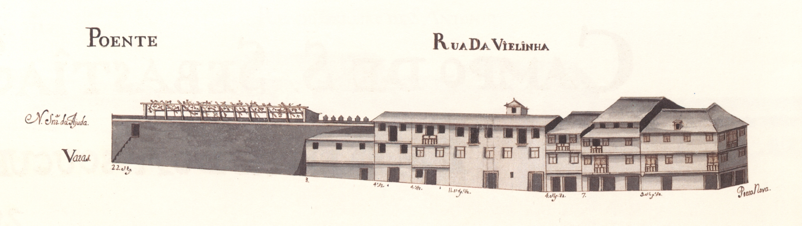

Legenda:Rua da Vielinha - nascente.
Legenda:Rua da Vielinha - poente.
Número: 1, Enfiteuta: Os herdeiros de Filipa Francisca, mulher de Francisco de Freitas,Foro: 20 reis, Descrição: Foi pertença do n.º 15 da Rua dos Sapateiros.
Número: 2, Enfiteuta: Não disponível,Foro: Não disponível, Descrição: Esta casa pertence à obra da Sé, a quem os herdeiros de Domingos de Araújo, caminheiro, e sua mulher,
Catarina Gonçalves, lhe pagam de foro
80 reis. Esteve integrada no prazo de uma casa da
Rua dos Sapateiros.
Número: 3, Enfiteuta: Manuel da Silva, padeiro,Foro: 10 reis e 1 galinha, Descrição: Pertenceu ao n.º 15 da Rua dos Sapateiros.
Número: 4, Enfiteuta: Vid. casa n.º 12, da Rua dos Sapateiros (rua n.º 23).,Foro: Não disponível, Descrição: Encontra-se subemprazada aos herdeiros de Manuel
Coelho de Araújo, tratante, e sua mulher, Maria da Costa. Faz parte do prazo da casa n.º
12, da Rua dos Sapateiros, à qual paga de foro 2000
reis.
Corresponde a duas casas pequenas, situadas na «agiela» da
Rua da Vielinha, da parte norte.
Número: 5, Enfiteuta: Não disponível,Foro: Não disponível, Descrição: Corresponde ao n.º 13 da Rua dos Sapateiros.
Confronta, do norte, com a agiela da Rua da Vielinha e, do
sul, com parte da casa n.º 18 da Rua de Maximinos.
Número: 6, Enfiteuta: Não disponível,Foro: Não disponível, Descrição: Corresponde ao n.º 18 da Rua de Maximinos, para onde tem a
frontaria e serventia principais.